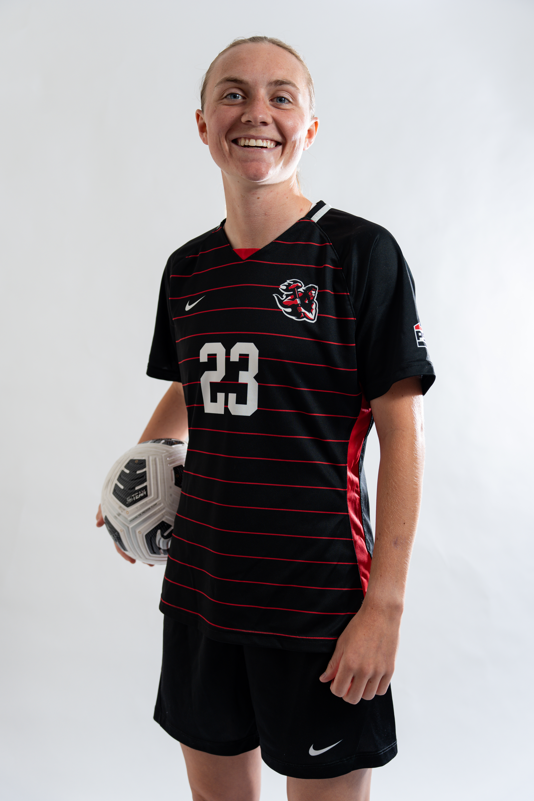

About Me
Hi, I'm Ashley! I'm a designer, builder, and creator. I love taking on complex, hands-on projects. Whether that's designing brand identities, managing social media, or designing various print media, I enjoy making them high quality, beautiful designs.
I recently relocated to Utrecht, Netherlands from the United States.
When I'm not working on digital design or building projects, you can usually find me outdoors, working on DIY projects, or building LEGO sets.
A little bit about me outside of the professional world, I played collegiate soccer for five years at two universities. I played four years of NAIA soccer at the University of Northwestern Ohio, and my final year, DII at California University of Pennsylvania! My first four years I played alongside several international students where I was the only American on the team, allowing me to be engulfed in several cultures without leaving the Midwest!
Aside from soccer being one of my biggest passions, I am also an avid traveler!! My connection to so many international students allowed me to expand my traveling outside the US, visiting Italy, Germany, Belgium, The Netherlands, Curaçao, Austria, and The UK. I grew up for nearly all my life in Fishers, IN, but was born in Chicago, sparking my love for Portillo's hot dogs and Chicago pizza! Despite being a Chicago native, my heart lies with the Green Bay Packers in the NFL world.
Lastly, another love of mine is dogs. I have my own Pug named Tobin, who is four years old and I consider to be my own child. He has two brothers from the same litter who live with my parents.
Let's Work Together